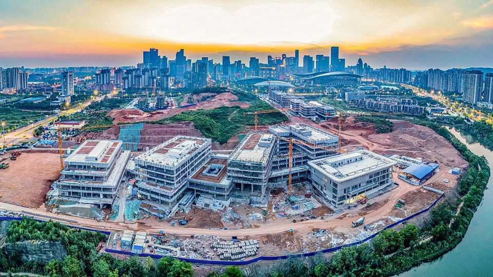
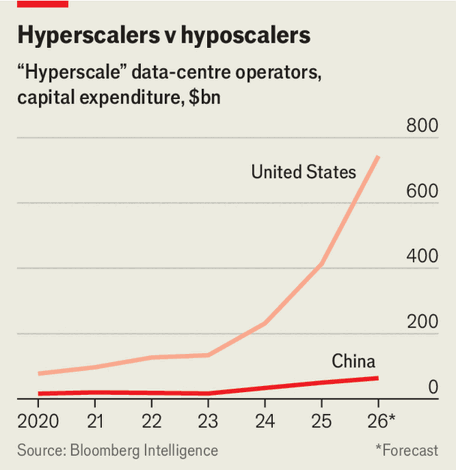

How China gets better bang for its buck than America in AI
Its investment lags far behind America’s. Its models do not

Aug 6th 2026
HOW MUCH money should companies lavish on artificial intelligence? American technology giants think the answer is: a lot. Their capital spending on data centres may surpass $740bn this year, according to Bloomberg Intelligence, a research firm. Investors, who also used to think that more is more, are having second thoughts. When on July 26th it emerged that Nvidia was in talks to underwrite $250bn of a gargantuan $500bn-plus data centre, stuffed full of its chips and run by OpenAI, a leading model-maker, its share price tumbled. Days earlier investors blanched when Alphabet, Google’s parent company, said it would boost its AI spending to $205bn this year. On August 5th SpaceX’s stock took a hit after the rocketry firm announced huge AI investments.
The American AI splurge looks especially profligate compared with Chinese parsimony. In 2026 China’s technology titans are forecast to invest less than a tenth as much in data centres as their American counterparts (see chart). All this frugality notwithstanding, their AI models currently appear only fractionally less powerful. K3, an advanced model launched last month by Moonshot AI, a Beijing-based startup, is 95% as clever (on widely used benchmarks) as Fable 5, a frontier model from Anthropic, another top American lab. On August 3rd Alibaba, China’s answer to Amazon, released a model which reportedly scored among the world’s best by some measures.

The cost of land (for data centres), some equipment (to fill these with AI servers) and labour (from construction workers to AI whizz-kids) is lower in China than in America. Chinese firms are also accused of training their models using the outputs of expensive American ones. Such “distillation”, as the process is known, lets China’s AI developers free-ride on some of the American spending.
Moreover, a portion of Chinese AI bill may not be captured in the headline capital-expenditure figures. Part of the sums that Chinese AI firms, especially smaller ones, might have spent on Nvidia’s best chips may instead have gone towards squeezing better results from inferior semiconductors. DeepSeek, which gave American AI darlings and investors a jump scare by launching a surprisingly powerful and efficient model in early 2025, is probably ploughing a fair bit into its techniques that reduce demand for computing power.
Yet such factors alone cannot explain why China is investing so much less than America for what seem to be comparable AI results. So what does?
One obvious answer for lower investments would be a shortage of capital. Chinese firms are, though, flush with it. The bigger check on companies’ AI outlays has been a dearth of things on which to spend money. American restrictions on technology exports to China mean that Chinese firms cannot buy the best—and priciest—AI chips, which are designed by Nvidia, an American firm, and manufactured by TSMC, a Taiwanese contract manufacturer (or foundry) with close links to America.
Unofficially, regulators in Beijing have gone so far as to discourage the use of even second-rate Nvidia chips, which Chinese companies can continue to procure for now. At times they have blocked the import of these, in order both to sanction-proof China’s AI infrastructure and to promote homemade alternatives.
Consider Alibaba. Last year it said that it would invest $53bn in AI between 2026 and 2028. The planned spending is chump change relative to that of Amazon or Alphabet. Even so, it may be out of reach. Alibaba, which boasts one of China’s most advanced chip-design programmes, used to outsource manufacturing to TSMC. American sanctions have forced it to find domestic suppliers instead.
The only Chinese purveyors capable of producing comparably powerful chips are Huawei, a technology behemoth blacklisted by America since 2019, and SMIC, a state-controlled foundry, which manufactures Huawei’s designs. However, American restrictions extend to sophisticated chipmaking gear, forcing Huawei and SMIC to come up with costly workarounds that limit how many sufficiently powerful chips the duo can churn out. Moreover, SMIC cannot offset this inefficiency by ramping up capital spending because the same sanctions also constrain how much less sophisticated chipmaking kit it can get its hands on.
American sanctions are not the only thing that limits Chinese AI capital spending. So does Chinese demand for AI services. Chinese businesses are notoriously stingy with their IT budgets, which are collectively less than one-tenth what American firms spend on software despite Chinese GDP being two-thirds of America’s (and a third bigger when adjusted for purchasing power). This penny-pinching is likely to reduce returns to AI firms’ investment—and thus their willingness to invest in the first place.
Moreover, the Communist Party’s AI ambitions are more about diffusing the technology through the economy than creating ever cleverer systems that require ever more powerful semiconductors in ever more data centres. Dozens of American AI companies are thought to be trying to develop artificial general intelligence, which could outdo humans in most intellectual tasks. In China, by contrast, fewer than ten companies are known to be working on such AGI, notes Xu Qi, the head of the Communist Party committee at the Shanghai AI Association.
Another signal to keep AI spending in check comes from investors familiar with all these constraints. Chinese ones have long been as wary of overspending on AI as those in America are apparently now becoming. Whereas America’s tech giants had until recently been rewarded with higher share prices for aggressive AI-spending plans, Chinese ones were likelier to be punished for AI profligacy.
Investors may currently be entertaining the idea that America has too many data centres. But China, for all its admirable restraint, may not have enough to take full advantage of its AI stars’ innovations—or for those stars to cash in. ByteDance, creator of the world’s top-ranked video-making AI (and owner of TikTok), suffers from intense computing bottlenecks that mean some clips take ten hours to process. Certain services from Zhipu AI, another Beijing lab, and Alibaba’s cloud-computing unit have to be strictly metered and sell out in minutes. K3 has a long waiting list of hopeful users. Diffusion of practical AI is less hungry for computing power than the quest for superintelligence. An overly restrictive diet can still stunt growth. ■